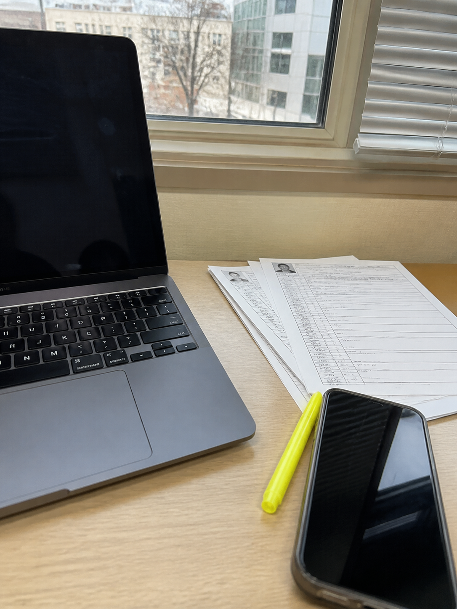

무료로 받을 수 있는 신청을 30만 원에 해 준다는 말, 세 줄만 확인하면 됩니다
이번 주에 마감이 몰려 있습니다. 네이버 예약 루키는 11월 30일, 소상공인 법률·노무 현장 상담은 12월 4일까지인데 둘 다 사업주가 직접, 무료로 신청합니다. 대행사가 신청 대행비를 부를 때 무엇이 값이고 무엇이 아닌지 가르는 기준을 정리했습니다.

이번 주에 무료 지원의 마감이 두 개 몰려 있습니다. 네이버 예약 루키는 11월 30일, 소상공인 법률·노무 현장 상담은 12월 4일까지입니다. 둘 다 사업주가 직접 신청하고 돈은 들지 않습니다. 그런데 이런 신청을 두고 "대행비 30만 원"을 부르는 곳이 있습니다. 오늘은 그 견적을 볼 때 무엇을 확인해야 하는지 적어 봅니다.
무료인데 왜 대행비가 붙나#
이유는 두 가지로 갈립니다. 하나는 실제로 손이 가는 일입니다. 사업계획서를 쓰고, 매출 증빙을 정리하고, 현장 실사 자료를 만드는 일은 몇 시간이 아니라 며칠이 걸립니다. 이런 작업의 대행료는 값이 있습니다.
다른 하나는 클릭입니다. 정부나 플랫폼이 여는 캠페인은 대개 사업주 본인 인증으로 신청합니다. 사업자등록번호와 대표자 인증이 있어야 신청 화면이 열립니다. 대행사가 대신 눌러 줄 수 있는 구조가 아닙니다. 그런데도 "신청 대행"이라는 항목으로 비용을 부르면, 그 돈은 클릭이 아니라 정보값입니다. 어디에 공고가 떴는지 알려 주는 값이죠.
정보값이 나쁜 건 아닙니다. 문제는 그 값이 얼마인지 사장님이 판단할 수 없게 부른다는 것입니다.
지금 열려 있는 무료 신청 세 개#
표로 먼저 보겠습니다. 셋 다 사장님이 직접 할 수 있는 것들입니다.
| 사업 | 내용 | 마감 | 비용 |
|---|---|---|---|
| 네이버 예약 루키 2026 | 예약 미사용 음식점이 예약을 열면 추천 상위 1,000곳에 포인트 15만 원 | 11월 30일 신청, 12월 7일 연동 | 무료 |
| 소상공인 법률·노무 현장 상담 | 변호사·노무사가 사업장을 방문해 1대1 상담, 법률·노무 각 50개사 | 12월 4일 | 무료 |
| 불공정거래 피해 상담 | 전국 77곳 상담센터에서 피해 상담과 전문가 연계 | 상시 | 무료 |
가운데 항목은 올해 달라진 게 있습니다. 그동안은 사장님이 기관을 찾아가거나 전화로 상담했는데, 올해는 전문가가 사업장으로 옵니다. 가게를 비우기 어려운 사장님을 위한 방식입니다. 근로계약서, 주휴수당, 퇴직금 같은 노무 문제와 상가 임대차, 불공정거래, 계약서 검토를 다룹니다. 중기부와 소상공인연합회가 운영하고, 신청은 12월 4일까지입니다.
대행 견적을 볼 때 확인할 세 줄#
- 신청 버튼이 누구 계정으로 열리는지 물어보세요. 사업주 인증이 필요한 신청이라면, 대행사가 할 수 있는 일은 서류 준비와 안내까지입니다. 그 이상을 약속하면 확인할 것이 남습니다.
- 비용 항목이 무엇에 대한 값인지 적혀 있는지 보세요. "지원사업 대행" 한 줄이면 판단할 수 없습니다. 사업계획서 작성, 증빙 정리, 현장 대응처럼 일이 나뉘어 있어야 값이 보입니다.
- 선정되지 않았을 때 비용이 어떻게 되는지 확인하세요. 지원금에서 수수료를 떼는 구조라면, 선정이 안 될 때 시간과 돈이 함께 사라집니다. 반대로 고정 비용이면 일의 양과 값이 맞는지만 보면 됩니다.
여기에 하나 더. 공동인증서나 사업자 인증 수단을 넘기라는 요구는 피하세요. 신청은 대신 눌러 줄 수 있어도, 그 인증으로 열리는 건 사장님 계정 전체입니다.

지원금을 기다리는 동안 할 수 있는 일#
마감이 지나면 아무것도 못 합니다. 12월 4일까지 신청할 수 있는 상담은 지금 넣어 두세요. 노무 문제는 12월에 정리해 두면 1월에 최저임금과 연차 계산이 꼬이지 않습니다. 예약 루키는 신청만 해 두고 예약 설정을 12월 7일까지 마치면 됩니다.
돈이 급한 가게라면 정책자금 쪽도 확인해 보세요. 중기부가 11월 24일 공고를 바꿔서, 홈플러스 피해 소상공인의 일시적 경영애로자금 금리를 고정 2.5%로 더 낮췄습니다. 이미 금리 우대를 받은 대출자도 같은 인하가 적용된다고 적혀 있습니다. 공고문에 조건이 다 있으니, 대행사에 묻기 전에 원문을 한 번 읽어 보시길 권합니다.
이 기준으로도 판단이 안 되는 경우#
대행이 늘 나쁜 건 아닙니다. 서류가 많고 사업계획서를 써야 하는 지원사업은 혼자 하다가 마감을 놓치는 경우가 훨씬 많습니다. 시간이 없는 사장님에게는 대행료가 합리적인 선택일 수 있습니다. 제가 문제 삼는 건 무료로 열려 있는 신청을 유료로 포장하는 경우입니다.
업종과 규모에 따라 지원 대상이 갈리고, 공고는 예고 없이 바뀝니다. 위에 적은 마감과 조건도 신청 화면에서 마지막으로 확인하세요. 그리고 상담 내용은 개별 사안에 따라 결론이 다르니, 법률 판단은 상담에서 받은 답을 기준으로 삼으시면 됩니다.
지원사업을 놓쳤을 때 생기는 손실은 지원금 3,604억은 다 나갔습니다에, 대행 계약서에 미리 적어 둘 조항은 12월에 대행을 시작하면 성과를 잘못 봅니다에 정리해 두었습니다.
확인한 자료#
- 파이낸셜뉴스(뉴스1), 「"변호사·노무사가 직접 소상공인을 찾아갑니다"…12월 4일까지 신청해야」, 2026년 11월 25일 — https://www.fnnews.com/news/202611250615581914 (새 탭에서 열림)
- 디지털데일리, 「네이버, '예약 루키 2026' 오픈」, 2026년 11월 6일 — https://www.ddaily.co.kr/page/view/2026110616594426750 (새 탭에서 열림)
- 중소벤처기업부, 2026년 소상공인 정책자금 융자사업 공고(변경) 제2026-616호, 2026년 11월 24일 — https://mss.go.kr/site/smba/ex/bbs/View.do?bcIdx=1072683&cbIdx=310 (새 탭에서 열림)
자주 묻는 질문#
대행사에 맡기면 선정 확률이 올라가나요?#
확률이 올라간다는 근거는 없습니다. 서류를 제대로 갖추면 심사에서 불리하지 않게 되는 정도입니다. "선정 보장"이나 "무조건 지원" 같은 문구가 있으면 그 자리에서 계약을 멈추고 공고 원문을 확인하세요.
신청 대행비로 얼마가 적당한가요?#
정해진 시세는 없습니다. 다만 사업계획서 작성과 증빙 정리가 들어가는지, 아니면 링크 안내와 신청 클릭인지에 따라 값이 달라야 합니다. 후자라면 사장님이 직접 하는 편이 빠릅니다.
무료 상담을 받으면 세무서에 불리한 자료가 되나요?#
아닙니다. 법률·노무 상담은 지원 사업의 상담이고, 상담 내용이 과세 자료로 넘어가는 구조가 아닙니다. 다만 상담에서 나온 사실관계를 정리해 두면 나중에 필요할 때 도움이 됩니다.
지금 받은 견적서에 대행 항목이 있는데 값이 적당한지 모르겠으면, 업체 이름과 항목만 카카오톡 채널 (새 탭에서 열림)로 보내 주세요. 무엇이 값이고 무엇이 아닌지 세 줄로 짚어 드립니다.
KEEP READING
이어서 읽기
같은 흐름에서 이어지는 글입니다. 지금 매장에 해당하는 지점부터 읽으시면 됩니다.

12월에 대행을 시작하면 성과를 잘못 봅니다 — 계약 전에 정할 다섯 가지
12월 매출은 원래 오르는 달이라 대행의 성과인지 계절 효과인지 구분이 어렵습니다. 올해 3분기 동네 가게 매출이 1년 전보다 4.36% 줄어든 해라 더 조심해야 합니다. 계약 전에 정할 다섯 가지를 정리했습니다.

지원금 3,604억은 다 나갔습니다 — 문을 닫은 사장님 10명 중 7명은 그 돈이 있는 줄 몰랐습니다
중기부가 공개한 사업 평가 보고서에서 소상공인 재기지원이 최하위 등급을 받았습니다. 예산은 두 배로 늘고 전액 집행됐지만 매출증가율은 -28.9%, 폐업 사장님 73.1%는 지원 제도를 쓰지 않았고 이유 1위가 '몰라서'였습니다. 다음 공고를 놓치지 않을 확인 순서를 정리했습니다.